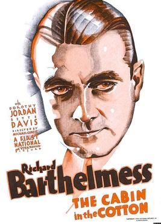

Cabin in the Cotton
Studio: First National Pictures
Starring: Richard Barthelmess, Dorothy Jordan, Bette Davis
Director: Michael Curtiz
Writer: Paul Green
Producer: Hal B. Wallis, Darryl F. Zanuck, Jack Warner
The Cabin in the Cotton is a 1932 American pre-Code drama film directed by Michael Curtiz. The screenplay by Paul Green is based on the novel of the same title by Harry Harrison Kroll. The film perhaps is best known for a line of dialogue spoken by a platinum-blonde Bette Davis in a Southern drawl — "I'd like ta kiss ya, but I just washed my hair." — a line lifted directly from the book.
Trivia
- Who would want to go to bed with her?" Angry that he was forced to use her against his will, Curtiz fumed throughout the shoot, loudly deriding her as "a goddamned lousy actress" or calling her a "God-damned-nothing-no-good-sexless-son-of-a-bitch!" under his breath during her love scenes with Richard Barthelmess.
- In later years, Davis said "Mr. Curtiz, I must say, monster as he was, was a great European moviemaker.
- And he wasn't fun...He was a real bastard!
Previous Showings
5 Runs • 3 Festivals
All runs on record (5):
- September 10 - 13, 1994w/ Safe in Hell
- April 28 - 29, 2007Film Noir, Val Lewton, 1930s musicals and more!w/ 42nd Street
- April 19 - 20, 2008w/ 20,000 Years in Sing Sing
- April 19 - 20, 2018Bette Davis Complete early films: 1931 - 1938w/ 20,000 Years in Sing Sing
- September 21 - 23, 2018Bette Davisw/ The Little Foxes